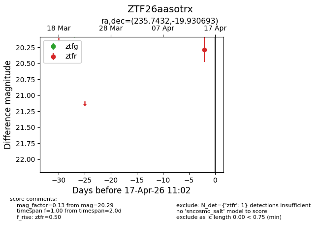
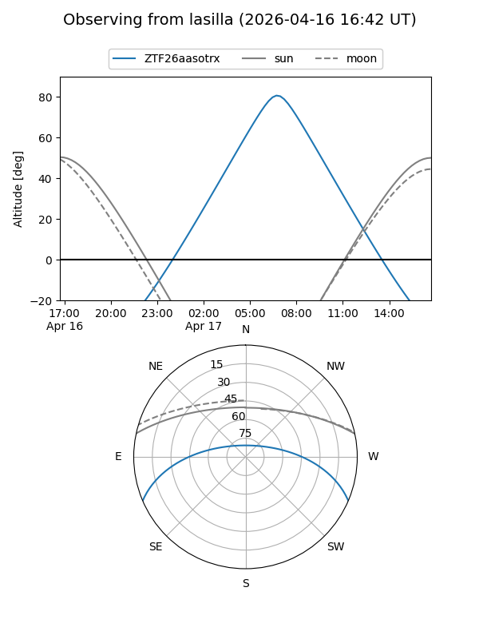
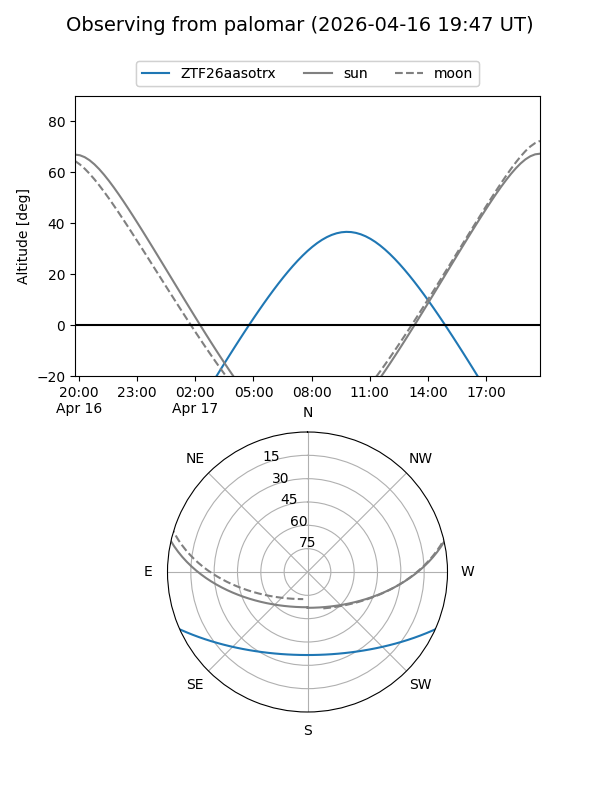

ZTF26aasotrx
Target ZTF26aasotrx at 2026-04-17 11:10
Aliases and brokers:
FINK: link
Lasair: link
ALeRCE: link
alt names
ZTF26aasotrx (ztf,fink_ztf)
Coordinates:
equatorial (ra, dec) = 235.7432,-19.93069
equatorial (HMS+DMS) = 15:42:58.37,-19:55:50.50
galactic (l, b) = (348.9466,+27.23431)
Flags:
Photometry:
last ztfr=20.29
1 ztfr detections
Lightcurve

Visibility


Additional plots